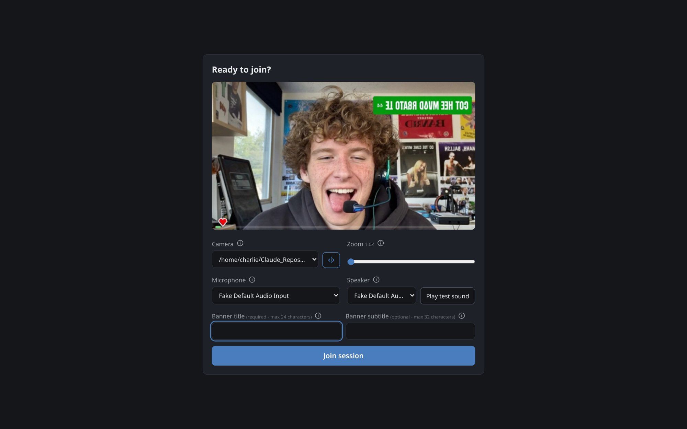
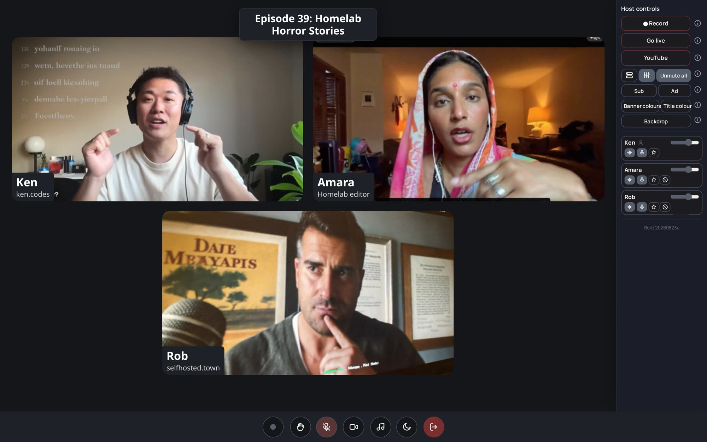

The show itself
GUESTS / HOSTS / RECORDINGGuests just join
Send one link. Your guest picks camera, mic and speaker, hears a test sound, watches their level bounce, zooms their camera if they like, and clicks join - arriving muted, so there are no accidental hot mics.
- No account, no install, phone-friendly
- RNNoise noise suppression on by default
- Camera zoom: real lens zoom where the camera supports it
- Choices remembered for next time

The host runs the show
A panel only the host sees: record, go live, spotlight a speaker, balance quiet and loud voices, fire soundboard clips and fullscreen intros. Every control explains itself from a little info dot.
- Your channel page and YouTube are separate buttons - either or both, one encode, each with its own clock
- Grid or spotlight, applied to every screen
- Soundboard and intro videos, auto-levelled, baked into recording and stream
- While live, the chat docks into the studio - answer the room without leaving

What you see is what records
The combined video is the picture people were on: every tile in the same order, the name banners, the logo and episode title exactly where you dragged them, the spotlight when you spotlit someone. Screen, recording and stream share one geometry - and a test suite holds them to it.
- One combined MP4 that plays anywhere
- A lossless FLAC per person, plus a lossless mixdown
- Browser-side or server-side capture, per session
- Rename, preview, download - per file or zipped bundles

Going live, on your address
HLS / CHAT / MODERATIONYour channel, your domain
Every host has a permanent watch page - share the link once, it
switches itself on when the show starts. Or go further: type
live.yourshow.org into the dashboard, point the DNS at your
server, and your audience watches at your address - certificate
included, nothing else to configure.
- About 2-3 seconds from studio to audience
- The exact stream the audience watched is saved as a recording
- YouTube can ride along on the same encode
- Off air, the page wears your logo - and a little Asteroids keeps early arrivals company
Chat you can actually host
Viewers pick a name and talk - no accounts. Words on the banned list are masked, never deleted. And moderation is a right-click: hide quietly removes one message for everyone except its author, who's told nothing; ban blocks name and address in one go, reversible from the dashboard, every action logged server-side with the time, name and address.
- Shadow-hide: the nuisance talks to an empty room
- Viewer addresses never reach any client
- Hosts moderate from the watch page or the docked studio chat
This is the real thing - the exact game an early arrival plays on your watch page before the show starts. Pure canvas, no assets, no tracking, and it steps aside the instant you go live.
Everything in the box
NO DATABASE / NO TRACKERSCamera zoom
Guests zoom right on the preview screen: real lens zoom where supported, crop-zoom everywhere else. Rare even in the paid tools.
Lossless recording
Per-person raw capture converted to FLAC, plus a combined video that matches the screen - banners, overlays and all.
Soundboard & intros
Laughs, applause, stings - one click, over the chat or muting everyone for the clip. Fullscreen intro videos take over every screen.
OBS clean feed
Every session has a view-only link with no controls: add it to OBS as a Browser Source and stream anywhere. Invisible to guests, never recorded.
Up to 10 people
A forwarding media engine (mediasoup) means a 2-core VPS handles a full grid comfortably.
No database
Flat JSON files in one folder. Back it up, export it as a zip, restore it with a click. Daily backups built in.
Privacy by default
No CDNs, no trackers, no cookies for guests, no external calls. Even the font is self-hosted. This page included.
Multi-host
Invite hosts by email; each gets their own sessions, recordings, branding, stream key and channel domain. Admin and host panels are separate logins.
Publish to FOSSCast
One click pushes a finished recording to your FOSSCast instance as a draft episode for the archive and RSS half.
Strict-network friendly
A built-in TURN relay gets guests through corporate and mobile networks.
Installable dashboard
The dashboard is a PWA with push notifications - know when a guest arrives or a recording is ready. Settings save themselves as you type.
Operable by humans
Daily backups with tested restore, uptime alerts by email, rollback deploys, and a plain-language runbook.
Install: paste one file
DOCKER COMPOSE- Point your domain at a Linux server with Docker, ports 80/443 (TCP) and 3478, 40000-40100, 49160-49200 (UDP) open.
- Save this file as
docker-compose.ymland fill in the five values at the top. docker compose up -d- the app builds straight from GitHub, the pages ship inside the image, Caddy fetches your certificate by itself. Sign in asadminand change the password.
No clone, no .env, no other files. What this installs is exactly what development runs.
Already running a proxy?
Delete the caddy service from the pasted file and point
nginx, Apache, a Cloudflare Tunnel or Tailscale at
127.0.0.1:3000 - the app binds only to loopback, and
never assumes it owns ports 80 and 443. Your proxy must pass
WebSocket upgrades and add HSTS; the
README
has a ready nginx config, plus Cloudflare Tunnel and
Tailscale-only setups - and the proxy can even live on a
different machine (guests' media never passes through it;
three settings, all in the same README section).
Updating
docker compose build app && docker compose up -d -
the build fetches the newest code from GitHub; your data lives in a
named volume and is left alone.
# FOSSStudio in one paste: fill in the five values, then # docker compose up -d x-config: &config DOMAIN: studio.example.com PUBLIC_IP: "203.0.113.7" HOST_PASSWORD: change-me SESSION_SECRET: change-me-too # openssl rand -hex 32 TURN_SECRET: change-me-three # openssl rand -hex 32 HTTP_PORT: "3000" services: app: build: context: https://github.com/lightmorphic/fossstudio.git dockerfile: server/Dockerfile restart: unless-stopped network_mode: host environment: <<: *config volumes: - fossstudio_data:/data caddy: image: caddy:2-alpine restart: unless-stopped network_mode: host environment: <<: *config configs: - source: caddyfile target: /etc/caddy/Caddyfile volumes: - caddy_data:/data - caddy_config:/config coturn: image: coturn/coturn:4-alpine restart: unless-stopped network_mode: host environment: <<: *config entrypoint: ["/bin/sh", "-c"] command: - > turnserver --realm="$$DOMAIN" --use-auth-secret --static-auth-secret="$$TURN_SECRET" --listening-port=3478 --min-port=49160 --max-port=49200 --no-cli --no-multicast-peers configs: caddyfile: content: | { on_demand_tls { ask http://127.0.0.1:{$$HTTP_PORT}/tls-allowed } } {$$DOMAIN} { encode zstd gzip header Strict-Transport-Security "max-age=31536000" reverse_proxy 127.0.0.1:{$$HTTP_PORT} } https:// { tls { on_demand } encode zstd gzip header Strict-Transport-Security "max-age=31536000" reverse_proxy 127.0.0.1:{$$HTTP_PORT} } volumes: fossstudio_data: caddy_data: caddy_config: